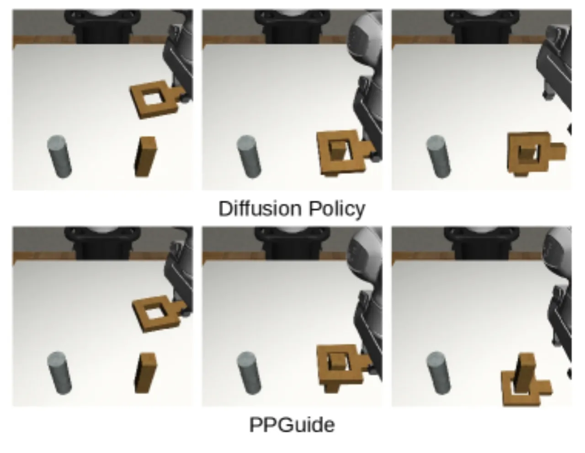
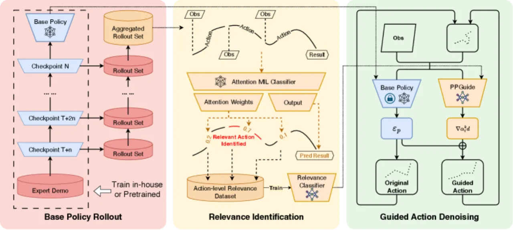
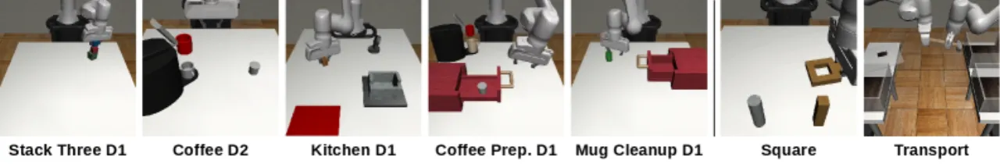
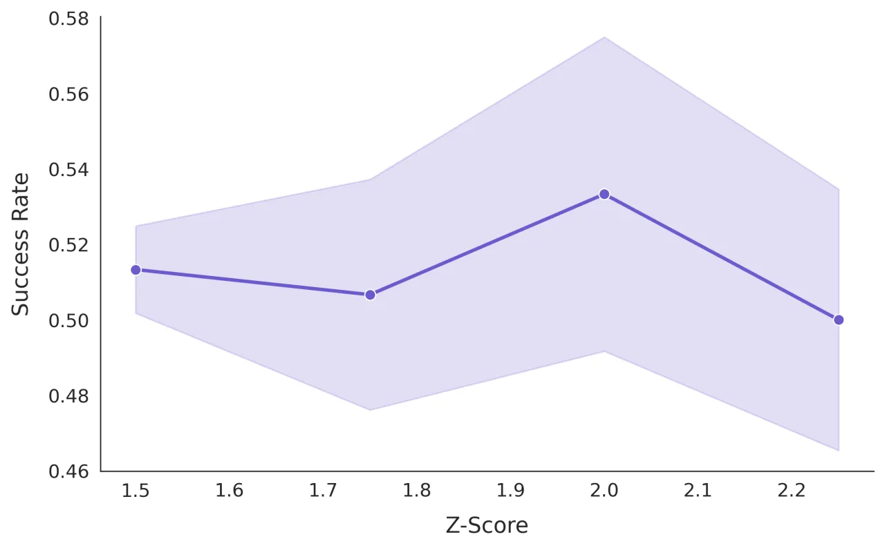

Diffusion policy 学多模态操作行为很强，但动作误差会随时间累积、最终导致失败。PPGuide 是一个轻量、基于分类器的框架：它用自监督方式自动找出 rollout 里与成败相关的 observation-action 片段，训练一个 performance predictor，在推理时用梯度把预训练好的 diffusion policy 引离失败模式——无需额外专家示范、无需 dense reward、也无需昂贵的 world model。
Diffusion policy 能高效学习复杂、multi-modal 的机器人操作行为，但生成的 action sequence 中的误差会随时间 compound（累积），最终可能导致任务失败。已有缓解手段——扩充专家示范数据集、或学习 predictive world model——要么需要更多标注，要么计算代价高昂。
“errors in generated action sequences can compound over time which can potentially lead to failure … We introduce Performance Predictive Guidance (PPGuide), a lightweight, classifier-based framework that steers a pre-trained diffusion policy away from failure modes at inference time.”
PPGuide 的核心思路：只用稀疏的二值成败信号（success / failure），从 policy 自己的 rollout 中自监督地学出「哪些动作片段导致了成功或失败」，再把这份知识以梯度形式在采样时注入 diffusion 去噪过程。它是 model-agnostic 的，可套在任意预训练 diffusion policy 上。

PPGuide 分三阶段：① 用 attention-based Multiple Instance Learning (MIL) 离线估计每个动作片段与成败的「相关性」；② 用 z-score 阈值把片段自监督地标为 SR / FR / IR；③ 训练轻量 performance predictor，在推理去噪时提供实时梯度引导。

把一条 trajectory 𝒯 视为带有 bag-level 标签 Y ∈ {success, failure} 的 bag，其中每个 (oₜ, aₜ) 是一个 instance。每个 instance 先过 encoder ϕ 得到嵌入 hₜ = ϕ(oₜ, aₜ)，再经 gated attention 得到权重 αₜ、加权聚合为 bag 表示 z，最后由 g 输出 P(Y | 𝒯)，端到端用 binary cross-entropy 训练：
MIL 无需 instance 级监督即可让模型给「witness」片段（真正决定成败的时刻）分配高注意力权重。
对所有 rollout 算出 {αₜ}，用 z-score 阈值 τ 分三类：成功 bag 中 αₜ>τ 的记为 Success-Relevant (SR)，失败 bag 中 αₜ>τ 的记为 Failure-Relevant (FR)，其余 αₜ≤τ 记为 Irrelevant (IR)。论文观察到 IR 片段数量通常是 SR/FR 的 10 倍以上——说明模型确实能「精确定位关键时刻」。
在自标注数据上训练分类器 f_guide 输出 P(y | oₜ, aₜ), y ∈ {SR, FR, IR}。去噪步 k 时对 action 求梯度，一个鼓励成功、一个排斥失败，叠加进 noise 预测：
设计上 wsr ≪ wfr：失败模式多样、需要稳健的「普遍排斥」，而成功动作稀疏且高度依赖上下文，过强的「恒定吸引」会破坏稳定性。为省算力，引导只在交替（如偶数步）的去噪步施加，即可达到与「每步都引导」几乎相同的效果。
在 Robomimic 与 MimicGen 的 8 个任务上评测（Stack D1、Stack Three D1、Coffee D2、Coffee Prep. D1、Kitchen D1、Mug Cleanup D1、Square、Transport），涵盖 long-horizon、precision、articulated object 等挑战；均在只用原始专家示范 10% 的低数据设定下训练。Baseline：DP（base diffusion policy）、DP-SS（+stochastic sampling），以及 PPGuide 的变体 PPGuide-SS（stochastic sampling）、PPGuide-CG（每步 constant guidance）、PPGuide（交替引导）。

数字逐字摘自论文；括号内为相对 base DP 的增减。
| Task | DP | DP-SS | PPGuide-CG | PPGuide |
|---|---|---|---|---|
| Stack D1 | 92% | 88% (-4%) | 94% (+2%) | 94% (+2%) |
| Stack Three D1 | 28% | 24% (-4%) | 36% (+8%) | 34% (+6%) |
| Coffee D2 | 54% | 44% (-10%) | 58% (+4%) | 58% (+4%) |
| Coffee Prep. D1 | 16% | 14% (-2%) | 20% (+4%) | 20% (+4%) |
| Kitchen D1 | 52% | 38% (-14%) | 54% (+2%) | 52% (+0%) |
| Mug Cleanup D1 | 26% | 24% (-2%) | 32% (+6%) | 30% (+4%) |
| Square | 62% | 58% (-4%) | 72% (+10%) | 72% (+10%) |
| Transport | 60% | 54% (-6%) | 68% (+8%) | 68% (+8%) |
注意 DP-SS 在几乎所有任务上都劣于 base DP——论文据此指出 stochastic sampling 并不适配 PPGuide 框架。PPGuide / PPGuide-CG 则在 long-horizon 与 precision 任务上收益最大。
用 epoch 250–450 训练的 relevance 分类器去引导 epoch 1300–1600 的 deployment policy（rollout 与部署 policy 不同）。在较早 checkpoint 上收益尤为显著：
| Task (epoch) | DP | PPGuide |
|---|---|---|
| Square @1300 | 54% | 70% (+16%) |
| Square @1500 | 62% | 68% (+6%) |
| Transport @1300 | 56% | 74% (+18%) |
| Transport @1600 | 58% | 70% (+12%) |
PPGuide（交替引导）“achieved almost the same level as PPGuide-CG with much less guidance inference”——用更少的引导计算换到几乎相同的性能。引导强度存在标准的先升后降 trade-off；z-score 阈值敏感，在 Coffee D2 上取 {1.5, 1.75, 2.0, 2.25} 时性能在 2.0 处达峰。

需要一个「表现尚可」的初始 policy 才能工作；若 policy 几乎从不成功，就没有足够的成功信号供 MIL 学习。未来方向：更稳健的探索策略以获得更多样的初始轨迹。
MIL 可能把反复出现的无关特征误判为「相关」。未来方向：在部署中在线更新 relevance 分类器、更精细的 credit assignment 来刻画误差的逐步累积。
z-score 阈值 τ 与引导强度 wsr/wfr 都需针对任务仔细调参；实验中阈值取 2.0 附近才最优，偏离即掉点。